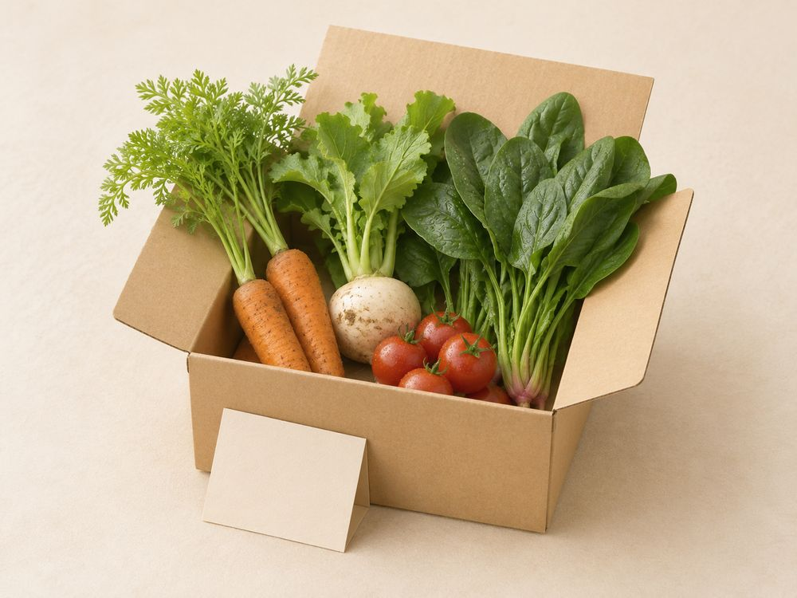
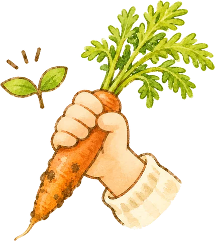
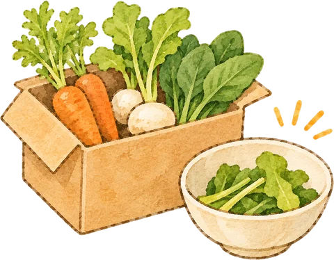
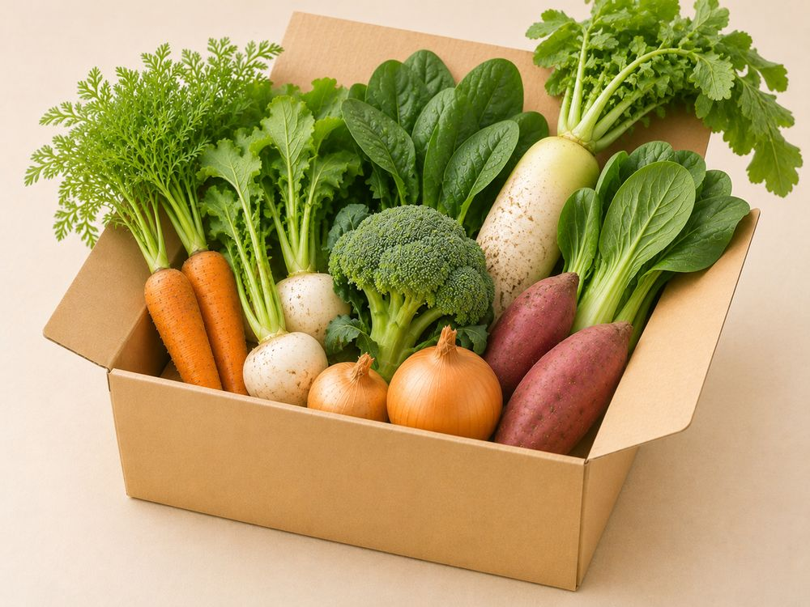
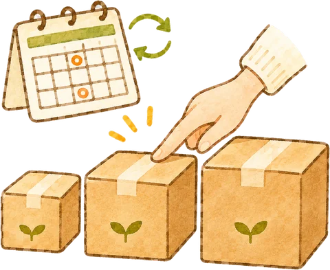
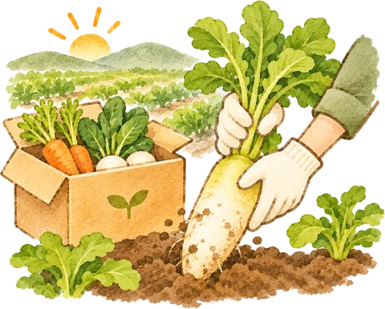
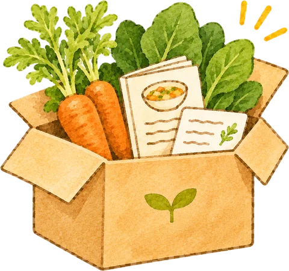
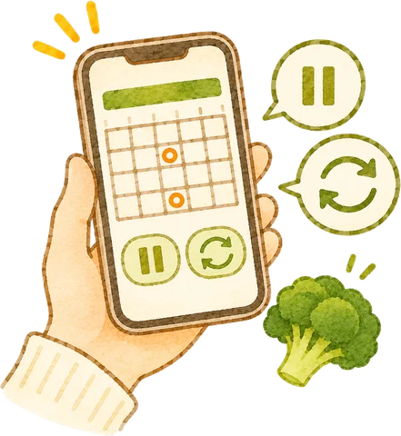

初回限定・送料無料
はじめてのお試しセット
¥2,000（税込）

お試しセットの写真- 旬の野菜4〜5品目を少しずつ（2〜3人分の目安）
- 生産者の手書きメッセージとレシピカードつき
- 全国どこでも送料無料（初回限定・1世帯1回）
- お届け後に、定期便への切り替えもかんたん
Subscription
隔週・毎週から選べる、旬の野菜セットの定期便。
はじめての方は、送料無料のお試しセットからどうぞ。

Worries
つちのね便なら、野菜のある毎日が、
もっと楽しく。

畑で育った旬の野菜を、農家から直接お届けします。
安心して、子どもにも
皮ごと食べさせられる
誰が、どの畑で、どう育てたのかを1軒ずつ紹介しています。
「今週は土屋さんの人参」と
食卓の会話が増える

使い切れる量を選べます。
定期便は隔週・毎週から選べて、お休みもできます。
冷蔵庫の野菜を、
最後までおいしく使い切れる
届いた野菜で作れるレシピと、生産者の手書きメッセージを一緒にお届けします。
献立に迷わず、
新しい料理に出会える
Plans
初回限定・送料無料
¥2,000（税込）

お試しセットの写真通常価格から10%オフ
1回¥2,250〜（税込）

定期便の野菜セットの写真Price
お届け間隔（隔週・毎週）は、どのセットでも選べます。
| セット | 内容量 | 通常価格 | 定期便価格（10%オフ） |
|---|---|---|---|
| 小さめ | 旬の野菜 5品目前後（1〜2人分） | ¥2,500（税込） | ¥2,250（税込） |
| S | 旬の野菜 6品目前後（2人分） | ¥3,000（税込） | ¥2,700（税込） |
| M | 旬の野菜 8品目前後（3〜4人分） | ¥4,000（税込） | ¥3,600（税込） |
| L | 旬の野菜 10品目前後（4〜5人分） | ¥5,000（税込） | ¥4,500（税込） |
※ 価格はすべて税込です。送料は料金・送料をご覧ください。
Flow
STEP01

セットの大きさと、隔週・毎週を選びます。
STEP02

朝に収穫した野菜を、その日のうちに箱に詰めて発送します。
STEP03

生産者の手書きメッセージも同封します。
STEP04

次のお届けの5日前まで、ご自身で変更できます。
Voice
豊田市・30代・K様
定期便 Mセット／隔週
子どもが人参を生のままかじるようになりました。
葉つきで届くので、葉っぱはかき揚げに。
生産者さんの手書きメッセージを読むのが、家族の楽しみになっています。
名古屋市・40代・S様
定期便 Sセット／毎週
スーパーでは見かけない野菜が入っていて、毎週箱を開けるのが楽しみです。
レシピカードのおかげで、献立に迷う時間が減りました。
岡崎市・20代・M様
定期便 小さめセット／隔週
一人暮らしなので、野菜を使い切れるか心配でした。
小さめセットは量がちょうどよく、捨てることがなくなりました。
FAQ
送料はお届け先の地域によって変わります。
くわしくは「料金・送料」のページをご覧ください。
お試しセットは、全国どこでも送料無料です。
次回お届け日の5日前までに、マイページからお休み・解約の手続きができます。
回数のしばりはなく、1回目のお届けのあとでも解約できます。
野菜セットの中身は、その週に畑でとれた旬の野菜をこちらで組み合わせてお届けします。
苦手な野菜がある場合は、マイページから2品目まで外すことができます。
お届けする野菜は、すべて有機JAS認証を受けた畑で育てています。
化学合成された農薬や化学肥料は使っていません。
届いたらすぐに箱から出してください。
葉物は湿らせた新聞紙で包んで冷蔵庫に立てて、根菜は葉を切り落として保存します。
野菜ごとの保存方法は、同封のカードにも書いています。

収穫したその日に発送した野菜を、生産者の手書きメッセージとレシピカードと一緒にお届けします。
お試しセットを申し込む（送料無料）お試しセットは初回限定・送料無料です。